Ireland
2003

In 2003 I traveled in Ireland.
The trip covered the Dingle Peninsula and Slea Head Drive, Blarney Castle, and Kylemore Abbey, with coastal and mountain roads in between.


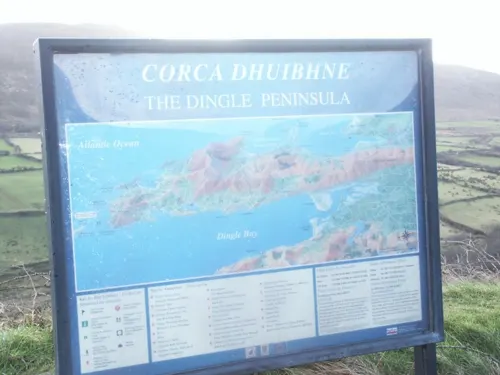

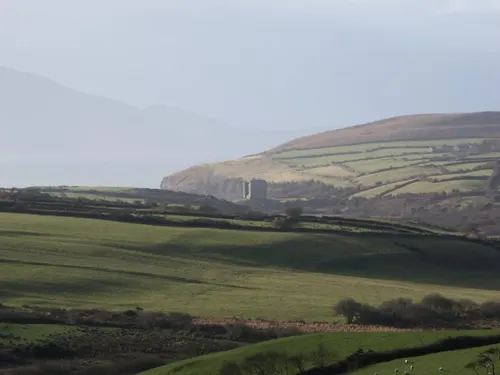

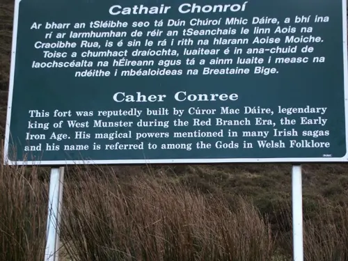

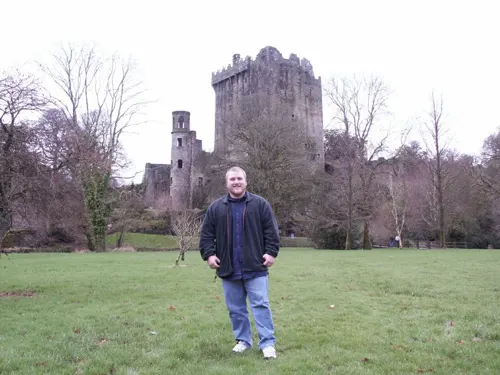

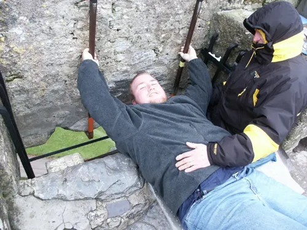

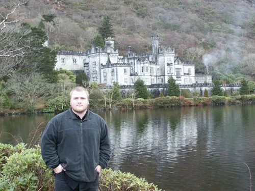

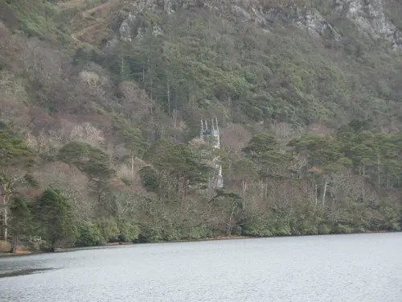

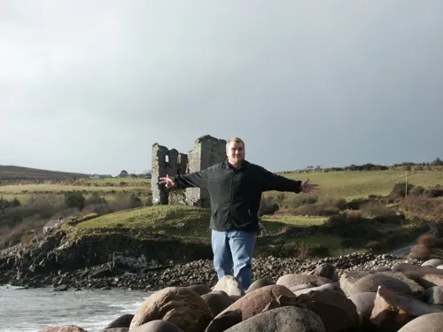

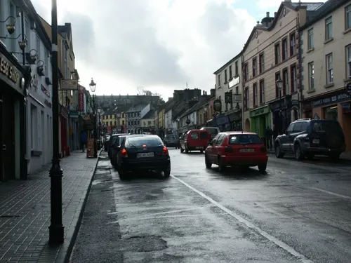

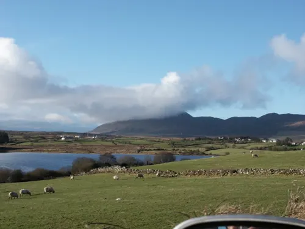

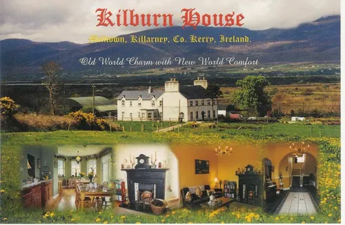